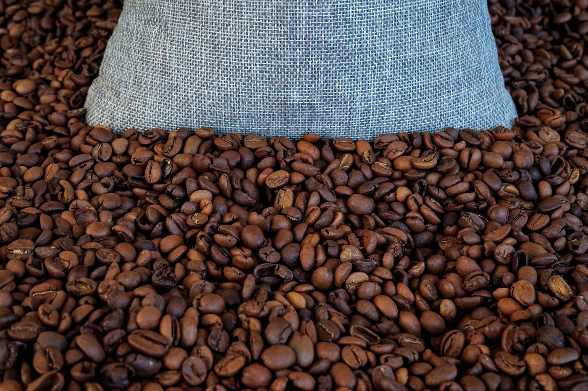
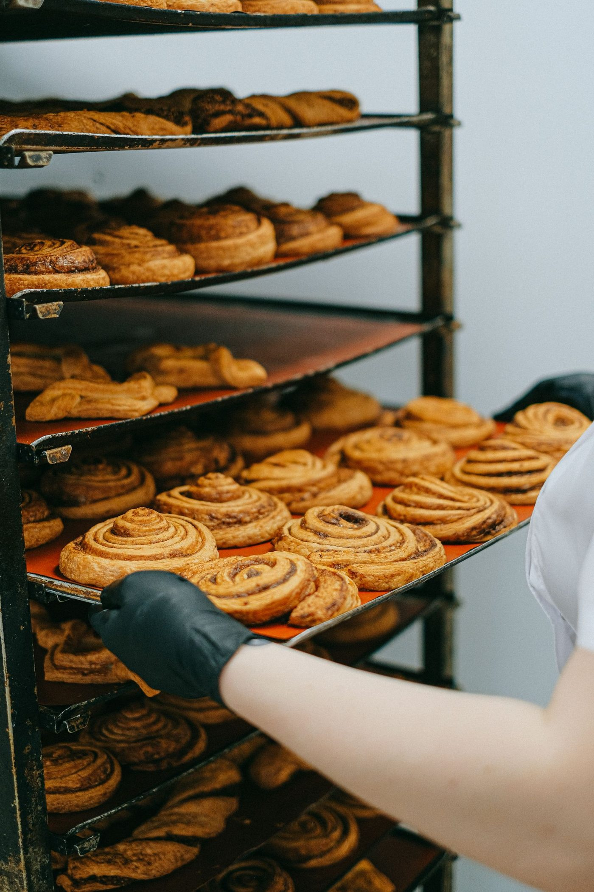

Menu at Cadence Coffee Company
Direct-trade coffee on 7th Street in downtown Chattanooga.
Specialty espresso drinks
Iced caramel latte, iced vanilla latte, cold brew, brown sugar latte, and chai, plus signature pun-named lattes including the Chattahooligan and the Blueberry Moc-iatto.
Pastries
Banana bread, lemon blueberry muffin, cinnamon coffee cake, cookies, and popovers.
Quiche
Local and seasonal quiche.
Bagels and breakfast sandwiches
Bagels and breakfast sandwiches with in-house cream cheeses.
Direct-trade coffee
Direct-trade coffee, brewed daily.
Gallery



All gallery photos are stock photos, labeled as such. They show the kind of work and setting described on this page, not this business.
Contact
Call (423) 521-7686 Email shannon@cadencecoffeeco.com
Cadence Coffee Company serves Chattanooga, TN. Questions? Call (423) 521-7686.